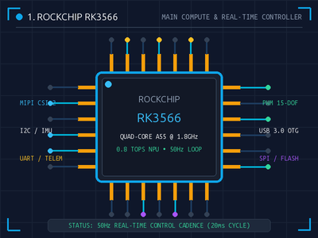
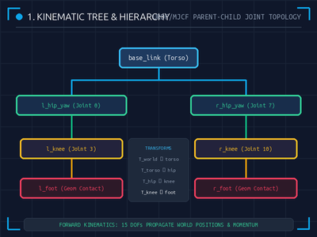
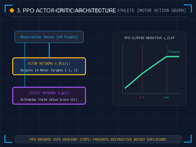
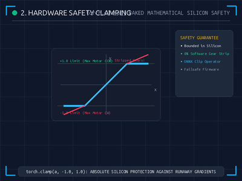
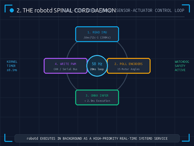
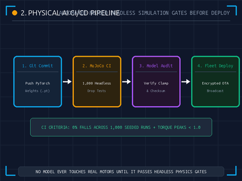

From Math to Metal — A 6-Phase interactive robotics curriculum bridging headless MuJoCo simulation, PyTorch PPO reinforcement learning, and bare-metal Rust daemons on the Rockchip RK3566.
Click "Open Slide Deck" to launch the interactive HTML module with dynamic physics simulations, or "Download Handout" for printable ReportLab PDFs.
High-resolution printable companion guides formatted using ReportLab's 2-column Diagram Method.
| Module / Handout | Key Engineering Topic | Pages | Action |
|---|---|---|---|
| Phase 1: Anatomy of a Robot | RK3566, IMU, 15-DOF Motors, LiDAR, RGB Camera, Battery | 4 Pages | Download PDF |
| Phase 2: The Invisible Matrix | MuJoCo Physics, Kinematic Trees, Geoms, mj_step, Autolimits | 3 Pages | Download PDF |
| Phase 3: The Dog Trainer | Gymnasium Observation/Action, Reward Penalties, PPO, Curriculum | 3 Pages | Download PDF |
| Phase 4: Brain Surgery & Edge Inference | Actor Extraction, torch.clamp, ONNX Export, deque Buffer | 3 Pages | Download PDF |
| Phase 5: The Nervous System | Rust Memory Safety, robotd 50Hz Loop, robotctl CLI, configd | 3 Pages | Download PDF |
| Phase 6: Securing the Swarm | updaterd A/B OTA, MuJoCo CI Gates, ED25519 Crypto, Observability | 3 Pages | Download PDF |
| 📘 Complete Masterclass Manual (All 6 Phases) | Comprehensive 19-Page Integrated Robotics Reference Book | 19 Pages | Download Book |
26 anti-aliased engineering diagrams generated with Pillow and embedded directly into the curriculum.






To run the entire curriculum locally on your classroom projector or lab computers:
Open http://localhost:8000 in your browser. All interactive sliders, JavaScript quiz engines, and ReportLab PDF downloads operate completely offline!